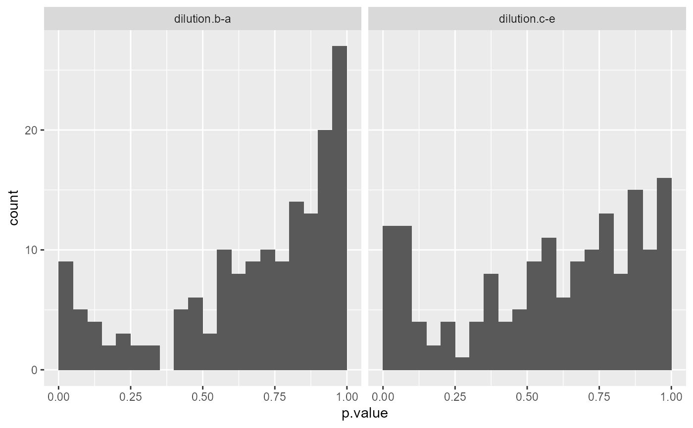
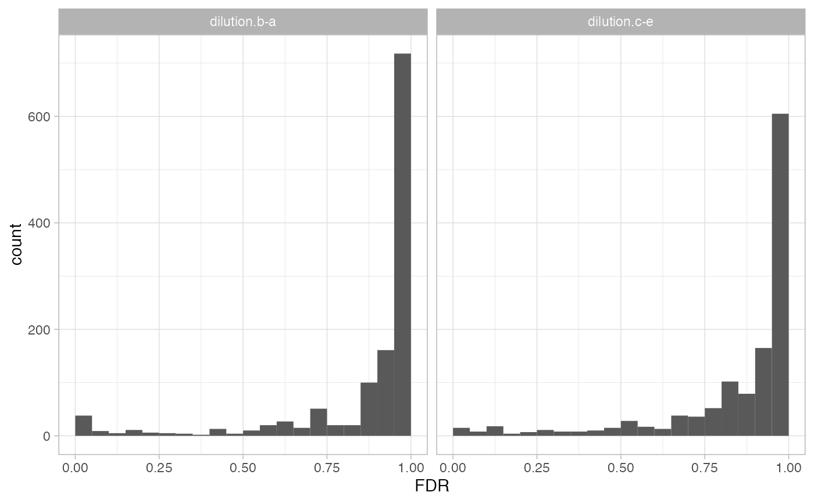
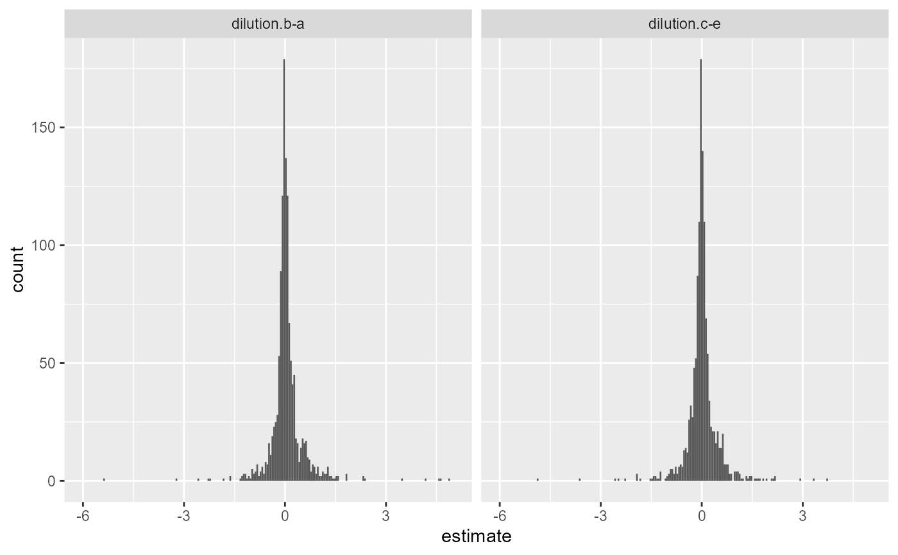
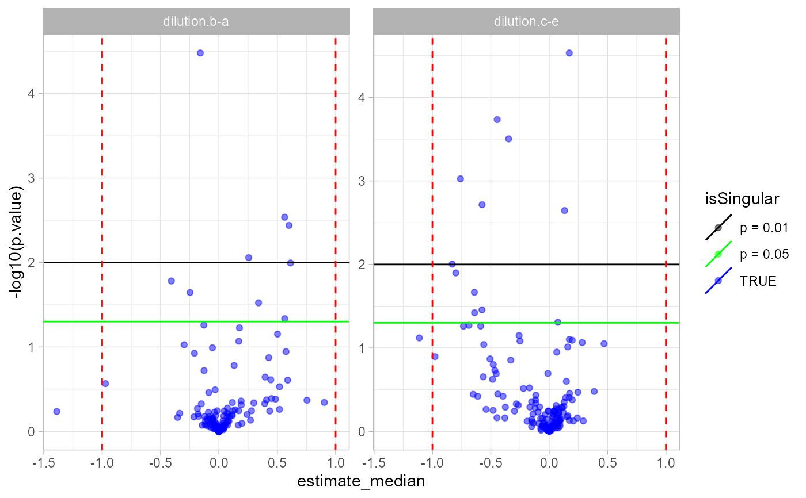
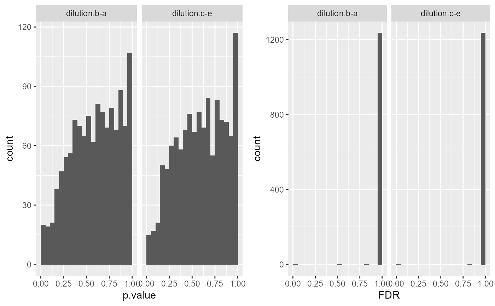
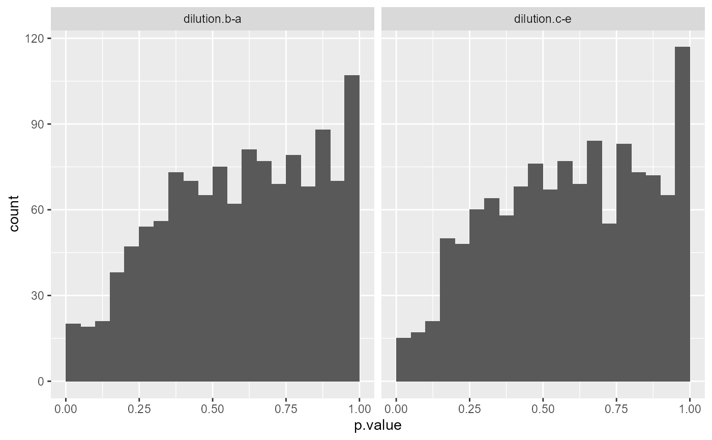
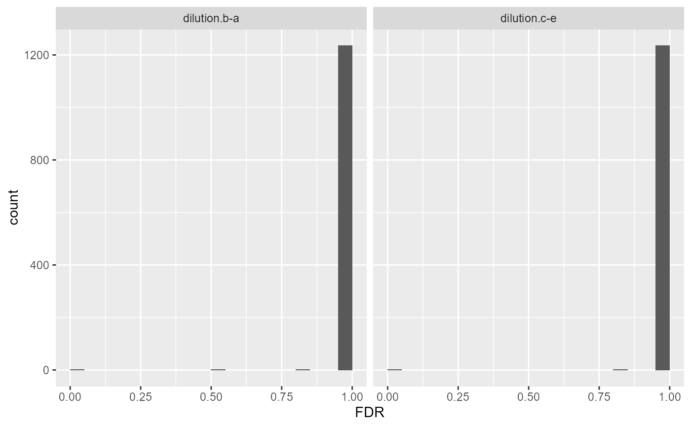

R/tidyMS_R6Contrast.R
ContrastsSimpleImpute.Rdcompute contrasts with data imputation (directly from data)
compute contrasts with data imputation (directly from data)
if interaction average can not be computed infer it using the 10% smallest interaction averages in the dataset. Based on these compute fold changes. Use median of peptide level fold changes as protein estimate.
Other modelling:
ContrastsModerated,
ContrastsROPECA,
ContrastsSaintExpress,
ContrastsTable,
Contrasts_Plotter,
Contrasts,
INTERNAL_FUNCTIONS_BY_FAMILY,
LR_test(),
Model,
addContrastResults(),
build_model(),
get_complete_model_fit(),
get_imputed_contrasts(),
get_model_coefficients(),
get_p_values_pbeta(),
isSingular_lm(),
linfct_all_possible_contrasts(),
linfct_factors_contrasts(),
linfct_from_model(),
linfct_matrix_contrasts(),
model_analyse(),
moderated_p_limma_long(),
moderated_p_limma(),
my_contest(),
my_contrast_V1(),
my_contrast_V2(),
my_contrast(),
my_glht(),
pivot_model_contrasts_2_Wide(),
plot_lmer_model_and_data_TWO(),
plot_lmer_model_and_data(),
plot_lmer_peptide_noRandom_TWO(),
plot_lmer_peptide_noRandom(),
plot_lmer_peptide_predictions(),
plot_lmer_predicted_interactions(),
strategy_glm(),
strategy_lmer(),
strategy_lm(),
summary_ROPECA_median_p.scaled()
prolfqua::ContrastsInterface -> ContrastsSimpleImpute
subject_Idsubject_id e.g. protein_ID column
contrastsarray with contrasts (see example)
modelNamemodel name
contrast_resultdata frame with results of contrast computation
lfqdatadata frame
confintconfidence interval
p.adjustfunciton to adjust p-values
globalTake global or local values for imputation
probsqunatile to estimate missing values from.
Inherited methods
new()initialize
ContrastsSimpleImpute$new( lfqdata, contrasts, confint = 0.95, p.adjust = prolfqua::adjust_p_values, modelName = "groupAverage", method = "V1", probs = 0.1, global = TRUE )
lfqdataLFQData
contrastsarray of contrasts (see example)
modelNamedefault "groupAverage"
get_contrast_sides()get contrasts sides
ContrastsSimpleImpute$get_contrast_sides()
get_contrasts()table with results of contrast computation
ContrastsSimpleImpute$get_contrasts(all = FALSE)
write()write contrasts computation results to
ContrastsSimpleImpute$write(path, format = "xlsx")
pathfolder to write to
formatdefault xlsx (can be csv or html)
get_Plotter()get Contrast_Plotter
ContrastsSimpleImpute$get_Plotter()
to_wide()convert contrast results to wide format
ContrastsSimpleImpute$to_wide(columns = c("p.value", "FDR"))
columnsvalue column default p.value
clone()The objects of this class are cloneable with this method.
ContrastsSimpleImpute$clone(deep = FALSE)
deepWhether to make a deep clone.
library(prolfqua) library(tidyverse) bb <- prolfqua::data_ionstar$normalized() configur <- bb$config$clone(deep=TRUE) configur$table$hierarchyDepth <- 2 data <- bb$data lfqdata <- LFQData$new(data, configur) Contrasts <- c("dilution.b-a" = "dilution.b - dilution.a", "dilution.c-e" = "dilution.c - dilution.b") #ContrastsSimpleImpute$undebug("get_contrasts") tmp <- ContrastsSimpleImpute$new(lfqdata, contrasts = Contrasts) bb <- tmp$get_contrasts() #> completing cases #> dilution.b-a=dilution.b - dilution.a #> dilution.c-e=dilution.c - dilution.b #> completing cases #> Warning: NaNs produced tmp$get_contrast_sides() #> # A tibble: 2 x 3 #> # Groups: contrast [2] #> contrast c1 c2 #> <chr> <chr> <chr> #> 1 dilution.b-a dilution.b dilution.a #> 2 dilution.c-e dilution.c dilution.b pl <- tmp$get_Plotter() pl$histogram() #> $p.value #> Warning: Removed 100 rows containing non-finite values (stat_bin).  #> #> $FDR #> Warning: Removed 100 rows containing non-finite values (stat_bin).  #> pl$histogram_estimate()  pl$ma_plot()  pl$volcano() #> $FDR #> Warning: Removed 100 rows containing missing values (geom_point).  #> tmp <- ContrastsSimpleImpute$new(lfqdata, contrasts = Contrasts, method = "V2") pl <- tmp$get_Plotter() #> completing cases #> dilution.b-a=dilution.b - dilution.a #> dilution.c-e=dilution.c - dilution.b #> completing cases #> Warning: NaNs produced pl$histogram() #> $p.value #> Warning: Removed 100 rows containing non-finite values (stat_bin).  #> #> $FDR #> Warning: Removed 100 rows containing non-finite values (stat_bin).  #>